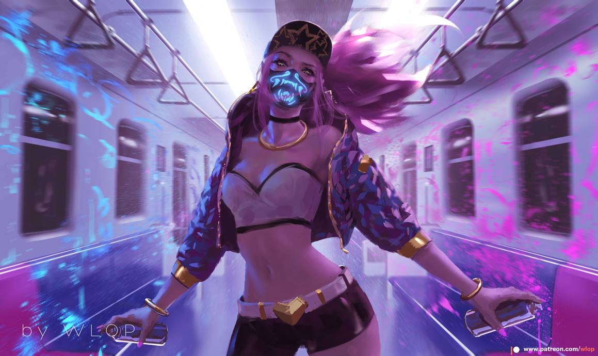

ชื่อ : นายทธรรษ ธีรชูวิวัฒน์
ชื่อเล่น : พล
ไอโอเนียยังคงเป็นดินแดนแห่งเวทมนตร์ธรรมชาติตราบแต่กาลก่อน เหล่าผู้คนมีชีวิตชีวาและดวงวิญญาณทรงอำนาจต่างใฝ่หาหนทางที่จะอยู่ร่วมกันอย่างสงบสุข… ทว่าบางคราความสมดุลยภาพอันสงบนี้หาได้มาอย่างง่ายดายไม่ บางครามันจำเป็นต้องอยู่ภายใต้การควบคุม ภาคีคินโค คือกลุ่มที่ตั้งตนเป็นผู้พิทักษ์ความสมดุลอันศักดิ์สิทธิ์ของไอโอเนีย เหล่าสาวกชั้นสูงของภาคีได้ขับเคลื่อนทั้งโลกแห่งวิญญาณและโลกแห่งสรรพสิ่ง คอยไกล่เกลี่ยข้อพิพาทระหว่างทั้งสองฝ่าย ยามเมื่อจำเป็นจึงแทรกแซงด้วยพละกำลัง อาคาลิ บุตรีแห่งเมย์ยัม จโยเมน เตธิ กำปั้นแห่งเงาผู้เลื่องชื่อได้ถือกำเนิดขึ้นมาท่ามกลางบรรดาศักดิ์เหล่านั้น เมย์ยัมและคู่ชีวิตของนาง ทาฮ์โน ได้เลี้ยงดูบุตรีของทั้งสองภายในภาคีคินโค ภายใต้การเฝ้าระวังของผู้นำ นายใหญ่คุโช ดวงเนตรสนธยา ยามใดที่พ่อแม่ถูกเรียกตัวไป สมาชิกคนอื่นของภาคีจะเข้ามาเป็นตัวแทนครอบครัวของอาคาลิให้ เคนเนน แกนหลักแห่งความโกลาหล เขาได้สละเวลาหลายชั่วยามไปกับการถ่ายทอดเคล็ดวิชาชูริเคนให้เด็กสาว และมุ่งเน้นความเร็วและความว่องไวมากกว่าพละกำลัง อาคาลินั้นเป็นเด็กสาวผู้เปี่ยมพรสวรรค์ได้ซึมซับวิชาเหล่านั้นราวกับฟองน้ำ มันบ่งชี้อย่างไร้คำกังขาว่านางจะเจริญรอยตามวิถีพ่อแม่ของนาง—เฉกเช่นเดียวกับ เชน บุตรชายของนายใหญ่ผู้รั้งตำแหน่งผู้สืบทอด นางจะชักนำเหล่าคนรุ่นใหม่ให้อุทิศตนเพื่อรักษาความสมดุลของไอโอเนีย กระนั้นแล้วความสมดุลกลับดำรงอยู่เพียงชั่วคราว เมื่อภาคีนั้นแบ่งแยกเป็นสองฝักสองฝ่าย เซต สาวกนอกคอกหวนกลับมาพร้อมทั้งปะทะกับคุโชอย่างดุเดือด แย่งชิงอำนาจด้วยการปฎิวัติอันนองเลือด อาคาลิได้หลบหนีไปทางภูเขาฝั่งตะวันออกพร้อมกับเมย์ยัม เชน เคนเนน และเหล่าสาวกอีกเพียงหยิบมือ แต่น่าเสียดายที่ทาฮ์โนไม่ได้มาพร้อมกับพวกเขา การปฏิรูปของเซตทำให้ภาคีคินโคเปลี่ยนไปเป็นภาคีแห่งเงาซึ่งไร้ความปรานีจนเกือบหมดสิ้น ทว่าเชนตั้งเจตนารมณ์จะสร้างสิ่งที่สูญเสียไปขึ้นอีกครั้งในฐานะดวงเนตรสนธยารุ่นใหม่ พวกเขาจะคืนกลับสู่หลักปรัชญาพื้นฐาน 3 ประการแห่งคินโค ได้แก่ ความเป็นกลางอันพิสุทธิ์แห่ง การเฝ้ามองดารา ข้อความแห่งการพิพากษาใน การไล่ล่าอาทิตย์ และการขจัดความไม่สมดุลโดย การตัดแต่งพฤกษา พวกเขาจึงต้องฝึกเหล่าสาวกเพื่อเพิ่มกำลังพลให้ยิ่งใหญ่ขึ้นอีกครา แม้ว่าในยามนี้กำลังพลจะยังน้อยนิดก็ตาม ยามเมื่ออาคาลิมีอายุได้ 14 นางได้เข้ารับการฝึกของคินโคอย่างเป็นทางการ นางได้ตัดสินใจมุ่งมั่นที่จะประสบความสำเร็จเช่นเดียวกับแม่ของนางในฐานะกำปั้นแห่งเงาคนใหม่ นางเป็นนักสู้ที่มีพรสวรรค์ เชี่ยวชาญการใช้คามะและคุไน—เคียวสองมือและมีดบิน แม้ว่านางจะมิได้ครอบครองทักษะด้านเวทมนตร์เหมือนเหล่าสหายสาวกคนอื่น แต่นางได้ก็พิสูจน์ว่าคู่ควรกับตำแหน่งนี้ ในที่สุดแม่ของนางก็ได้ก้าวลงจากตำแหน่งและมาช่วยเป็นที่ปรึกษาให้เหล่าสาวกรุ่นเยาว์ แต่จิตวิญญาณของอาคาลินั่นช่างร้อนรุ่ม และนางได้เรียนรู้ถึงบางสิ่ง นางรับรู้ได้ว่าบ้านเกิดของนางจะยังคงประสบปัญหาต่อไป เหตุเนื่องมาจากคินโคและภาคีแห่งเงานั้นไม่ลงรอยกันในเวลาที่เหล่าน็อกซัสได้เข้าบุกไอโอเนีย นางบังเกิดคำถามว่าสิ่งที่ทำอยู่เป็นหนทางบรรลุผลที่แท้จริงหรือ การตัดแต่งพฤกษาอาจหมายถึงการขจัดผู้คุกคามสมดุลอันศักดิ์สิทธิ์…ถึงกระนั้น เชนก็เอาแต่เลี่ยงการปะทะ เขากำลังรั้งนางไว้ การสวดมนต์และตั้งจิตนั้นอาจช่วยให้นางสงบลง แต่การกระทำเฉื่อยชาซ้ำซากเช่นนี้มิอาจทำลายเหล่าปรปักษ์ได้ ดรุณีสาวน้อยผู้มากพรสวรรค์แปรเปลี่ยนเป็นผู้ดื้อรั้นโดยสิ้นเชิง นางถกเถียงกับเชน นางได้ปฏิเสธเขา และกำจัดเหล่าศัตรูของไอโอเนียด้วยวิถีของนาง เบื้องหน้าภาคีทั้งหลาย อาคาลิได้ตระหนักถึงความไร้กำลังของภาคีโคคิน เหล่าสาวกต่างพูดคุยเรื่องความสมดุลของจิตวิญญาณและการบรรลุถึงความอดกลั้นเพียงเท่านั้น เหล่าชาวไอโอเนียกำลังจะตายลงในโลกแห่งสรรพสิ่ง ซึ่งที่นั่นก็คือโลกที่อาคาลิอยากจะปกป้อง นางถูกฝึกมาในฐานะมือสังหาร และนางต้องเป็น มือสังหาร เพราะฉะนั้นนางจึงไม่ต้องการภาคีอีกต่อไป เชนปล่อยให้นางไปโดยปราศจากการต่อสู้ เขาตระหนักได้ว่าวิถีของอาคาลินั้นจำต้องเดินเพียงลำพัง บางทีวิถีนั้นอาจนำพานางกลับมาในสักวันหนึ่ง แต่นั้นก็ขึ้นอยู่กับการตัดสินใจของนาง